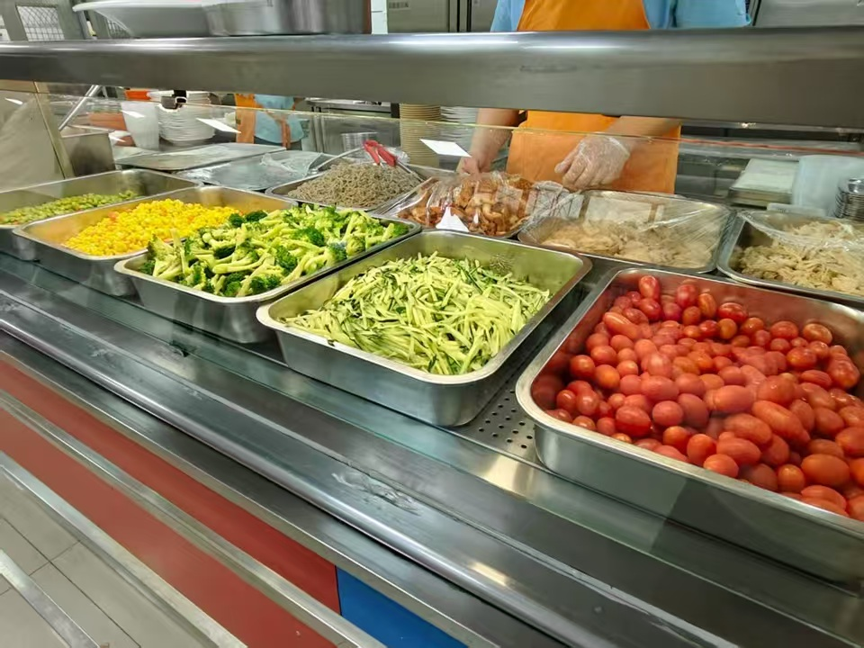
公一食堂
东区性价比最高的食堂，麻辣烫和肉蛋堡是必尝特色。西侧入口还有网红面包坊。
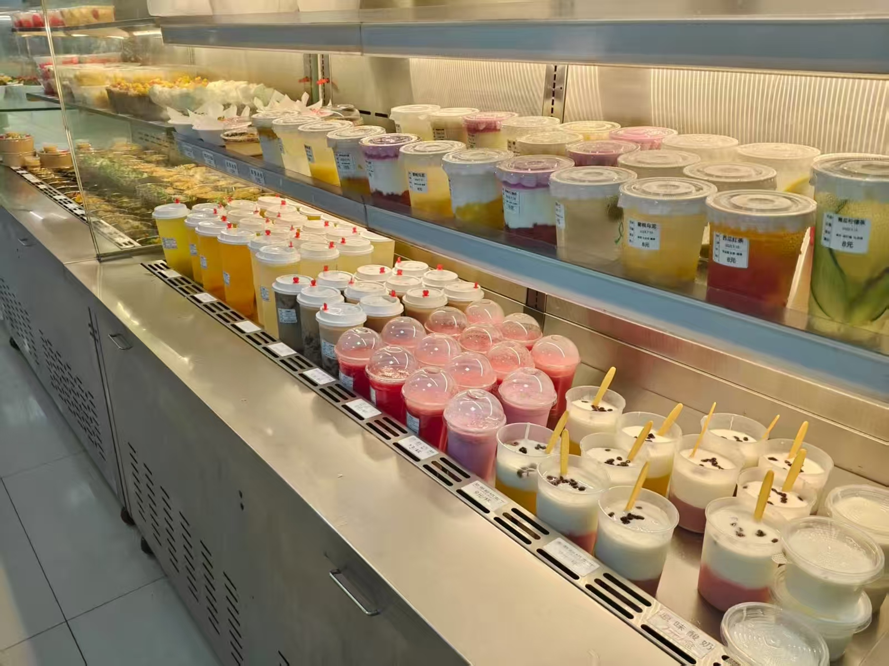
公二食堂
美食较多，强烈推荐漏奶华，猪脚饭以及咖喱鸡排饭，唯二缺点是饭点时人比较多以及价格略贵。
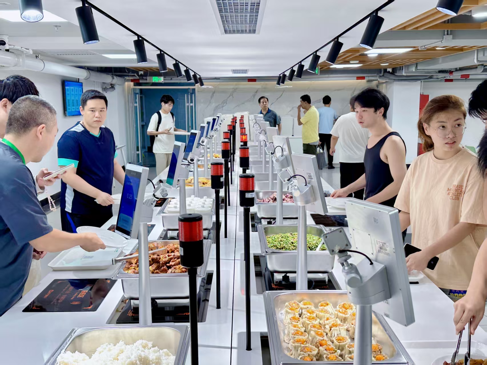
公三食堂
此食堂本人涉猎较少，经同学推荐卤肉饭和羊肉汤为地牢白月光，公三胜在离图书馆和教学楼很近。
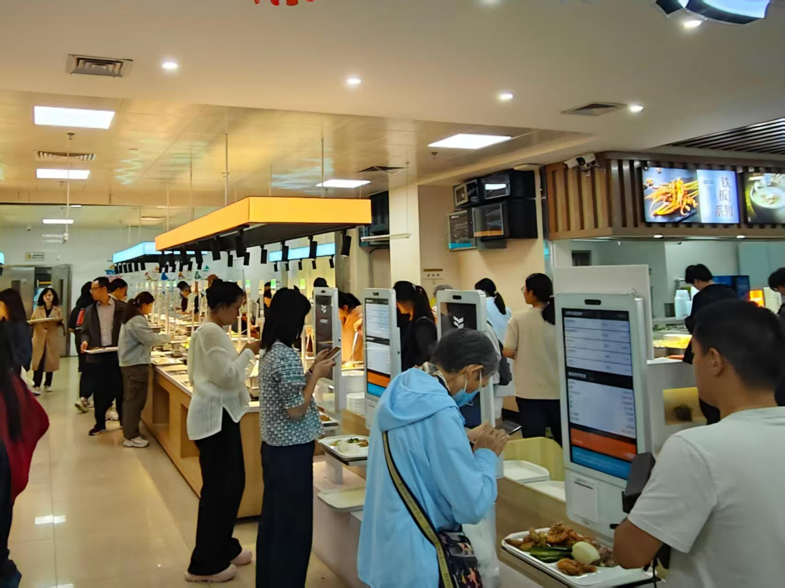
公四食堂（研一）
炫酷智慧餐厅，各色美食按需选择，实时显示营养成分表，食堂高科技，农大自研大豆冰激淋和常驻爆款海肠捞饭为必吃美食。
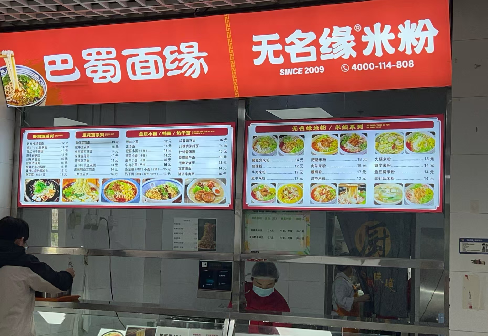
风味餐厅（研二）
汇聚五湖四海风味，营业时间长，食堂北侧的旋转小火锅，同时解锁火锅与烤肉，南侧还有咖啡厅，也是休闲放松的安逸角落。麻辣香锅和滑蛋饭简直夯爆了，推荐！
.jpg)
图书馆
东区学习氛围最浓的地方，需提前预约。一楼包含自主阅览室以及总服务台，二楼有个人学习区，想要安静学习且有些社恐的同学推荐在这里自习。二楼还有小组学习空间、研讨室以及交流空间等。二楼以上就是各个图书阅览区，也提供座位自习。
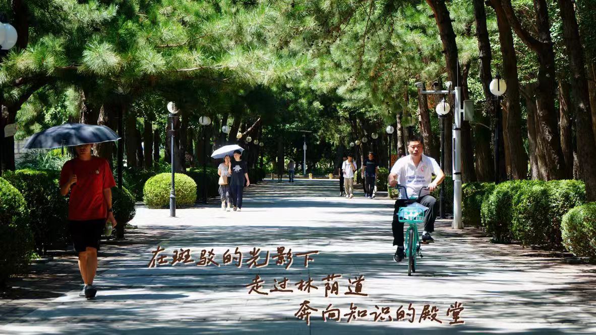
教学楼
三教有自习区，也提供电源插座。一教和二教在不同时段都有空闲教室，可以进去自习或者背书，也有几个教室是可以通宵自习的，在期末周前需要复习的同学可以去自行探索。
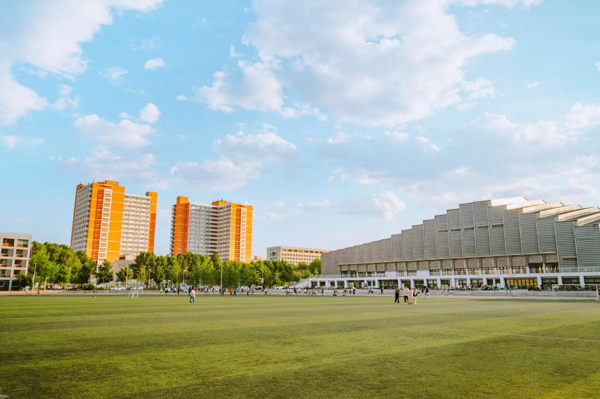
农大操场
足够大的足球场，四周跑道，是同学们校园跑的场所，也是运动健身的好去处。
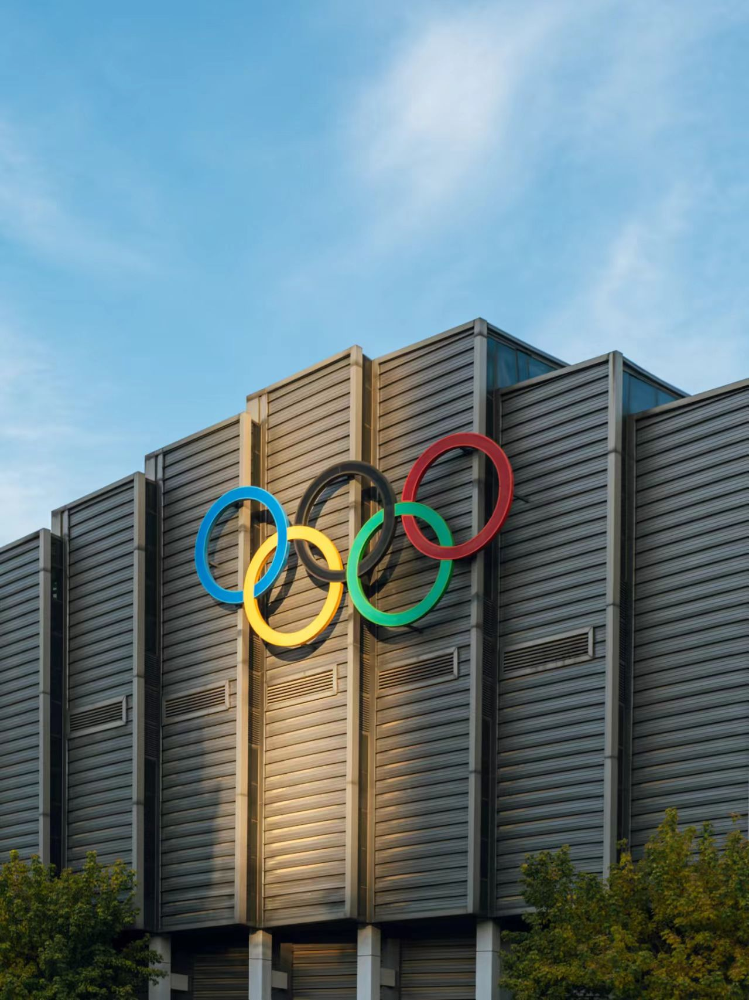
体育馆
为同学们提供室内体育场所，有篮球场、羽毛球场、乒乓球桌以及琴房等，平常社团排练等等也可在里面进行，馆内还设有健身房满足同学们的健身需求。
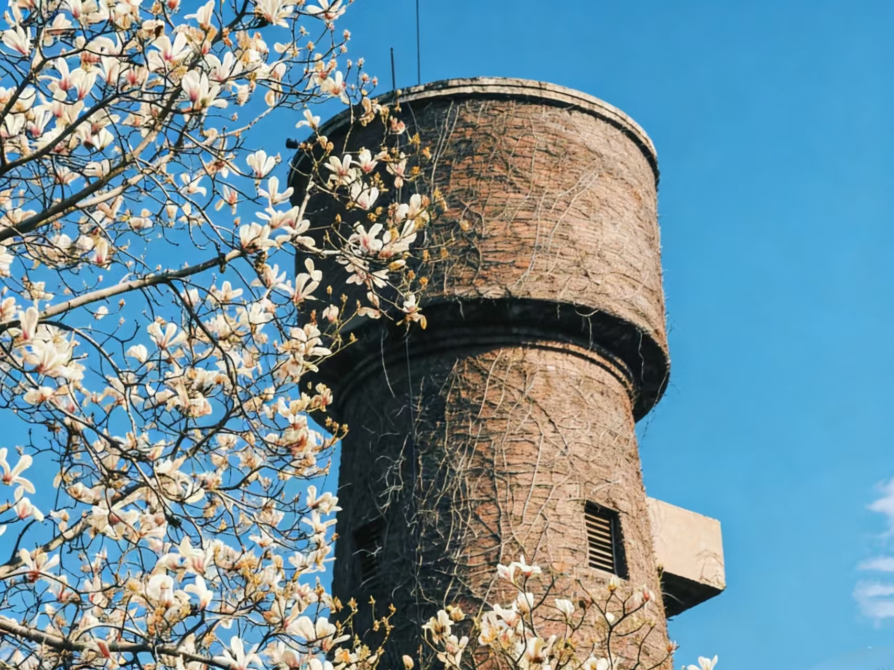
老水塔
老水塔正在焕发新生，与蔡凌豪老师设计的圆仓结合成为新的校园景观。同学们平常可以在这里约会或是出声读书，不失为一个好去处。
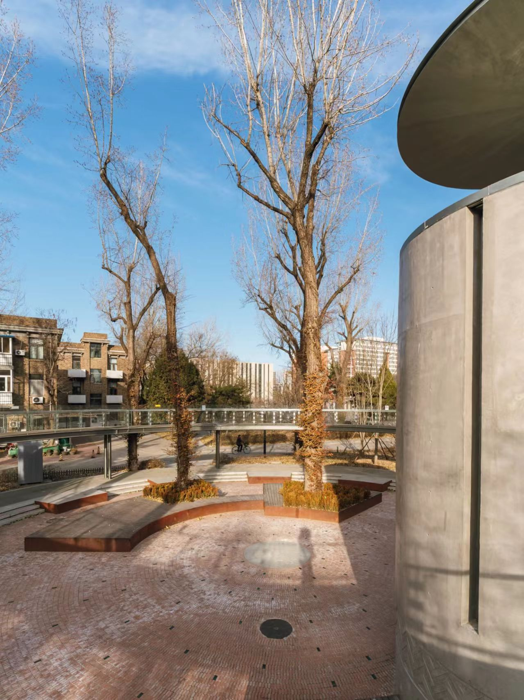
圆仓环廊
新修建的圆仓环廊在晚上时灯光特别美，可以约上三五好友在这里畅聊玩耍。
小猫咪
毛茸茸的小猫永远是治愈坏心情的良药，如果感到不开心或者疲惫的话，那就请去校园探索吧，说不定会随机刷新出一只可爱的猫咪，也有可能刷新出两只哦。

新辰里
逛街、美食、看电影一应俱全，最近全新升级的物美超市可以买到很多小吃零食，商场里还有很多美食，个人非常推荐商场一层的沙胆彪牛肉火锅。总而言之，是周末放松解压的最佳去处。
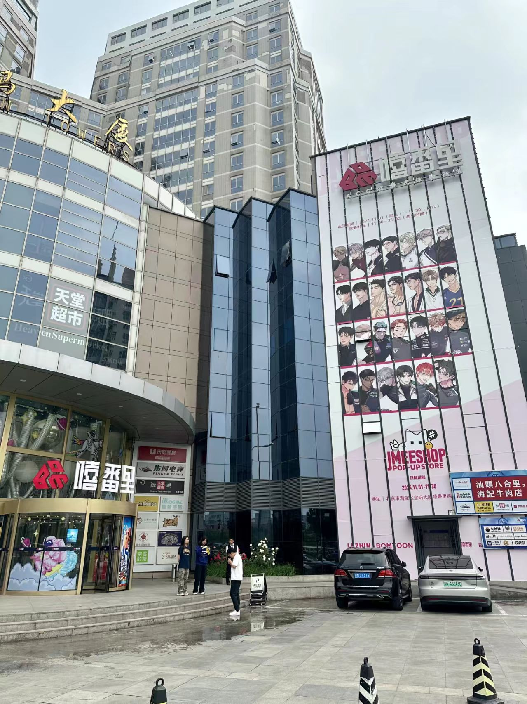
金码大厦
这里是一个集吃喝玩乐为一体的青年潮玩聚集地，有电竞、动漫、音乐等潮流元素，各种谷子店，简直是二次元的天堂。
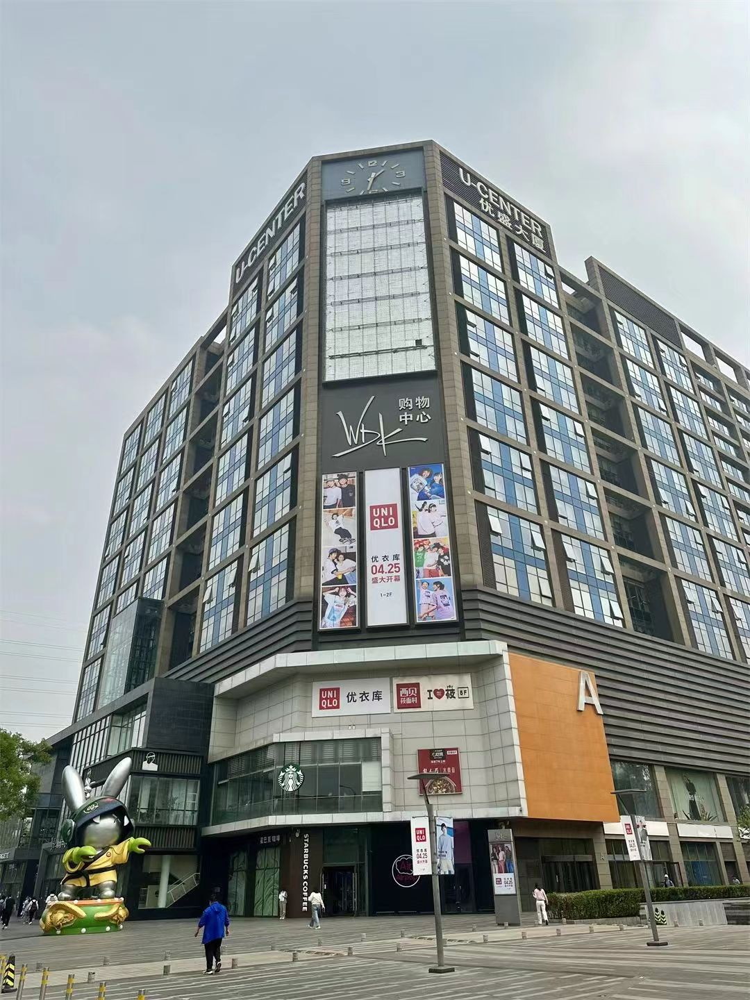
五道口购物中心
大家平常想去近一点的地方逛街买衣服等等就可以去五道口购物中心，骑自行车二十分钟就能到，这里有离我们学校最近的泡泡玛特店，喜欢盲盒的同学可以看过来。而且，这里的餐厅也相当不错，有川菜日料等等，吃货可冲。
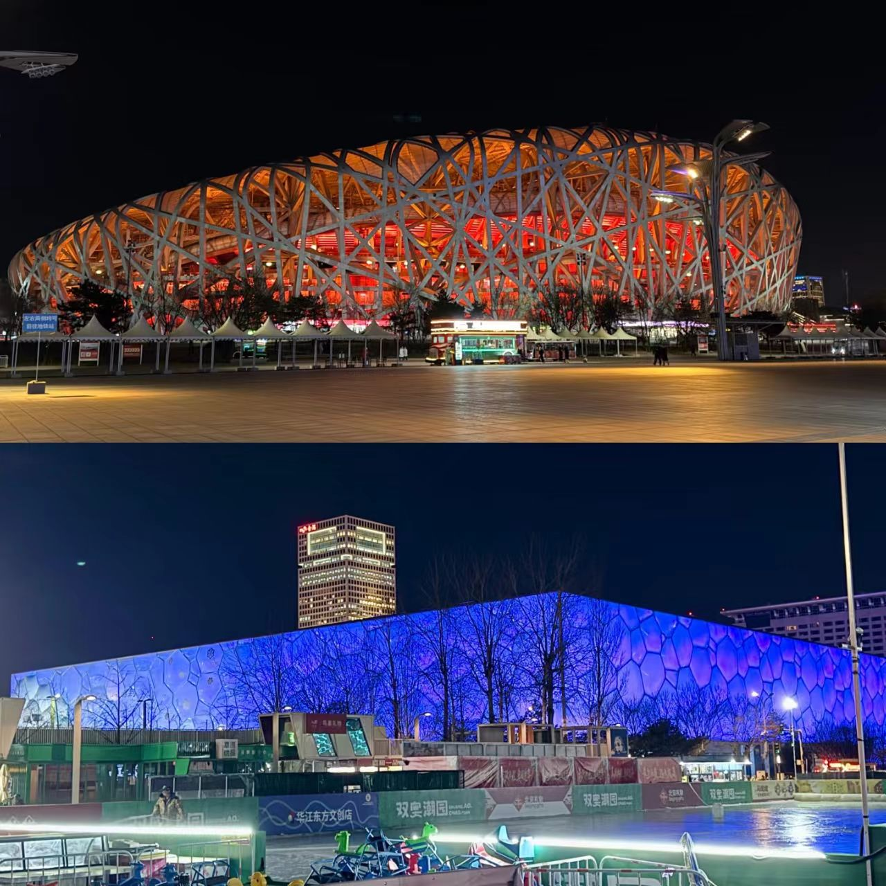
鸟巢
我们学校离鸟巢相当近，坐地铁两站即可到达，大家可以去鸟巢附近吃一些小吃，喜欢看演唱会的同学也很方便了。什么？你说抢不到票，没关系，鸟巢音响设备很好，站在场外也可以听到，还算清晰。